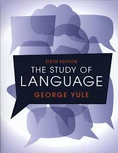

Study of Languages
Linguistics
Language
Textbook
Description
This bestselling textbook provides an engaging and user-friendly introduction to the study of language. Assuming no prior knowledge of the subject, Yule presents information in bite-sized sections, clearly explaining the major concepts in linguistics through all the key elements of language. The new edition has been revised and updated throughout, with major changes in the chapters on origins, phonetics, syntax, semantics, pragmatics, discourse analysis, first and second language acquisition and culture. There are also eighty new study questions, more than fifty new tasks, and twenty-four new sample sentences.
Book Details
Publisher
Cambridge University Press
ISBN
978-1009233408
Publication Date
November 10, 2022
File Size
~4-6 MB
Format
PDF, EPUB